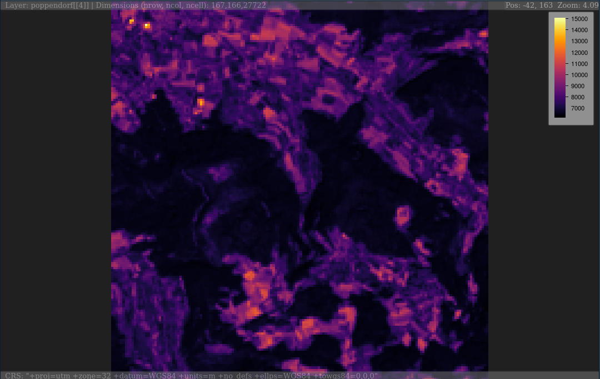
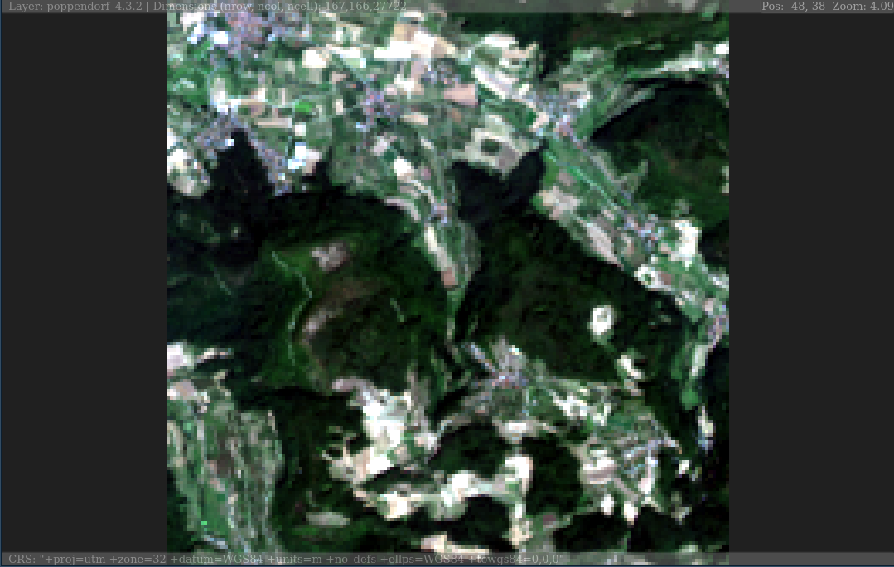
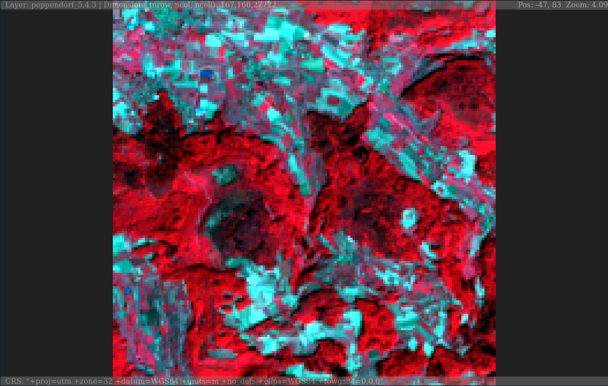

plainview enables interactive exploration of (raster)images. Images will be rendered on a plain HTML canvas (hence the name of the package). For spatial data this means that rendering is not restricted to a certain projection (e.g. web mercator for leaflet or mapview) but rendering is projection independent. It also means that it is possible to plot large images made up of millions of pixels.
Installation
You can install the released version of plainview from CRAN with:
install.packages("plainview")Example
# RasterLayer
plainView(poppendorf[[4]])
# RasterStack
plainview(poppendorf, r = 4, g = 3, b = 2) # true color
plainview(poppendorf, r = 5, g = 4, b = 3) # false color
Code of Conduct
Please note that the ‘plainview’ project is released with a Contributor Code of Conduct. By participating in this project you agree to abide by its terms.